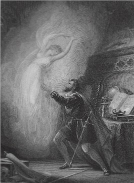

|
Вечно наше стремление к постижению
истины. |
|  |
В предлагаемых читателю избранных
главах по теории групп и их приложениям к физике
элементарных частиц будут рассмотрены вопросы
классификации частиц по представлениям
унитарных групп, вычисление отдельных
характеристик адронов, подробно разобрана
кварковая модель. Первые главы посвящены
краткому изложению необходимых сведений по
теории групп, алгебр и их представлений, при этом
подробнее дан материал относительно унитарных
групп SU(2) и SU(3), играющих основную роль в
современной физике элементарных частиц.
Действительно, группа SU(2) является группой
спиновых и изотопических преобразований, а также
составляет основу группы калибровочных
преобразований электрослабых взаимодействий SU(2)
x U(1) в модели Салама-Вайнберга-Глэшоу. Группа SU(3)
в свою очередь, является основой модели
унитарной симметрии и кварковой модели с тремя
ароматами, а также группой цвета, т.е., на ней
покоится все здание квантовой хромодинамики.
С тем, чтобы познакомить читателя на простых
примерах с теоретико-групповым формализмом,
применяемым в физике элементарных частиц, будет
подробно изложено построение массовых формул
для элементарных частиц. Другими важными
примерами конкретного применения формализма
теории групп и их представлений послужат примеры
вычислений таких важнейших характеристик
элементарных частиц как магнитные моменты и
аксиально-векторные константы связи в модели
унитарной симметрии и кварковой модели. Будут
построены выражения для электромагнитного и
слабого токов адронов и кварков в обеих моделях.
Особое внимание будет уделено проблеме
нейтральных токов. Подробно приведено
построение электрослабого тока кварков, что
должно составить практическое введение к модели
Салама-Вайнберга-Глэшоу. Введено понятие цвета и
даны простые примеры, подтверждающие гипотезу
цвета. Объясняется введение векторных бозонов
как калибровочных полей.
Автор старался построить лекции таким
образом. чтобы читатель мог, по их прочтении,
самостоятельно проводить вычисления многих
характеристик элементарных частиц.